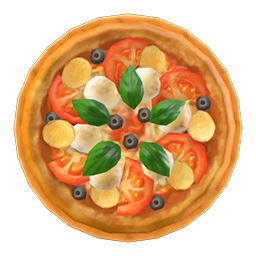

Pizza Margherita

Description
This pizza margherita is a favorite among many villagers and is sure to be a hit at your next animal gathering. This savory recipe gives the player five energy points, to be used when breaking rocks or relocating trees.
Ingredients
 Flour (3)
Flour (3) Tomato (2)
Tomato (2)
Where to Obtain Recipe
- From a villager while they are cooking in their house
- In a message bottle on the beach
- The chef at the restaurant in Happy Home Paradise
- After designing a vacation home for Anicotti, Audie, Canberra, Chadder, Frett, Freya, Friga, Frita, Gloria, Hugh, Ketchup, Pate, Paula, Peanut, Rodney, Teddy, and Twiggy
Further information on this recipe can be found at Nookipedia
Return home